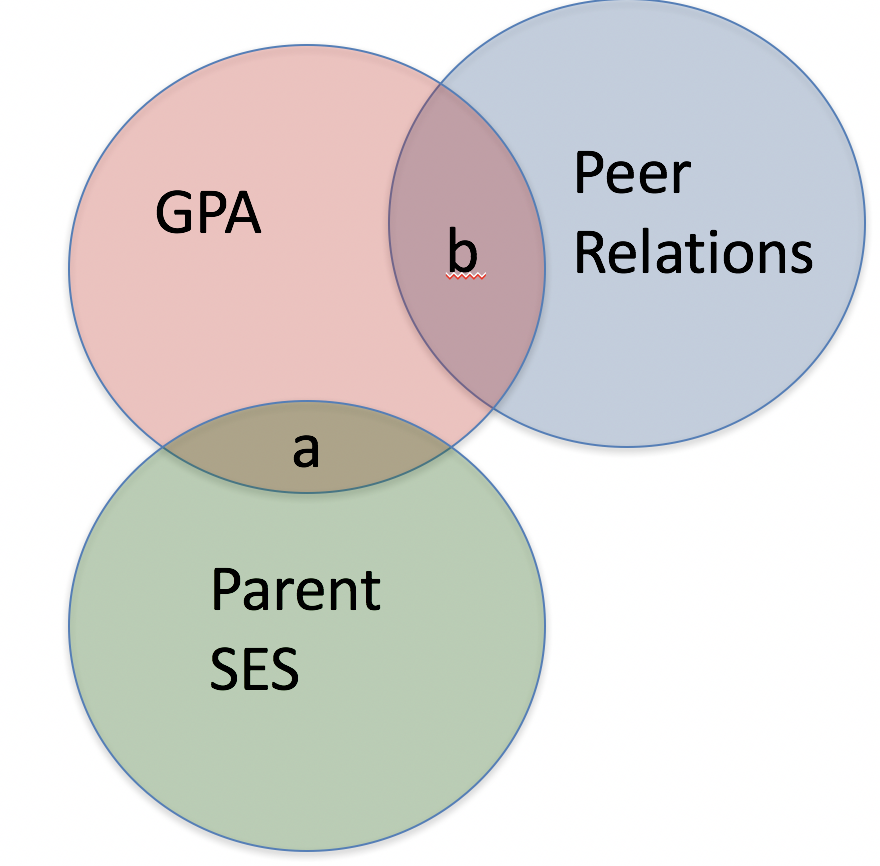
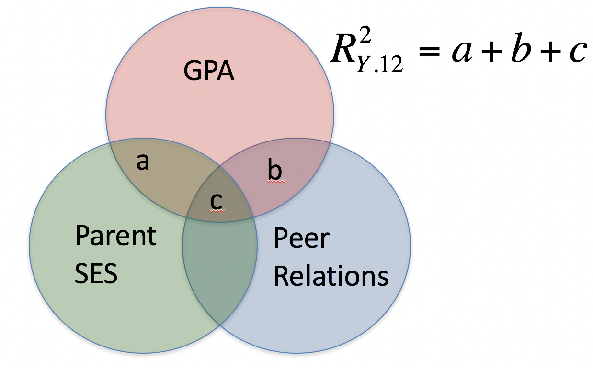
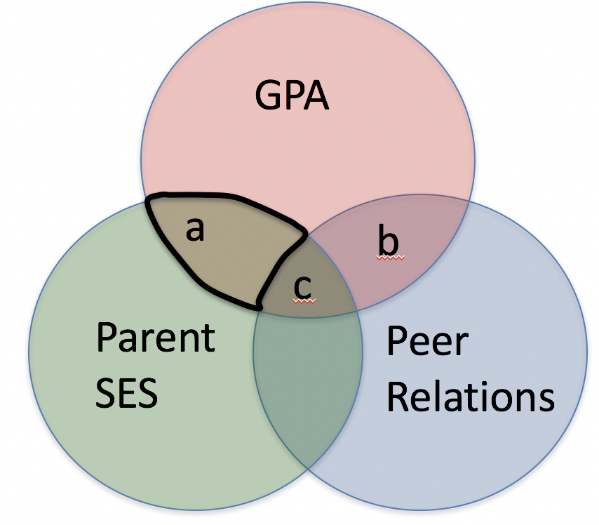
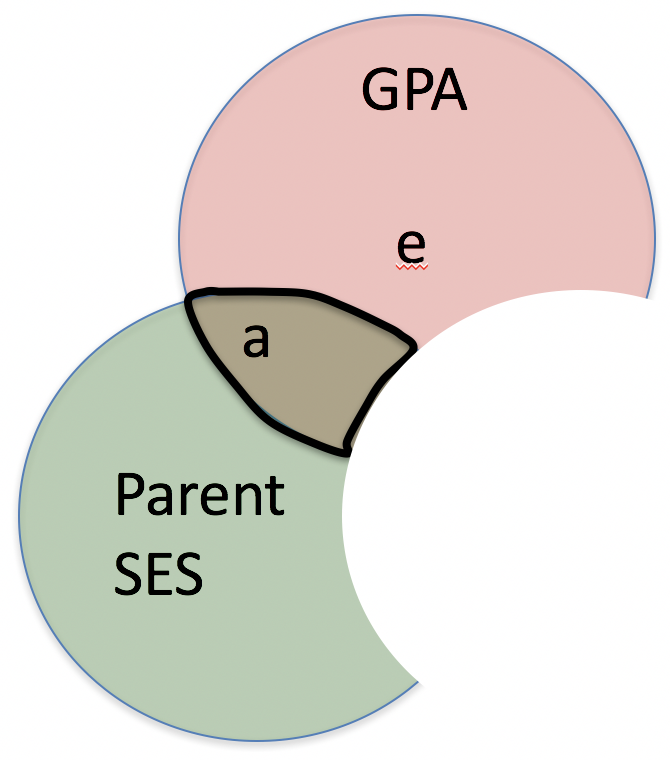
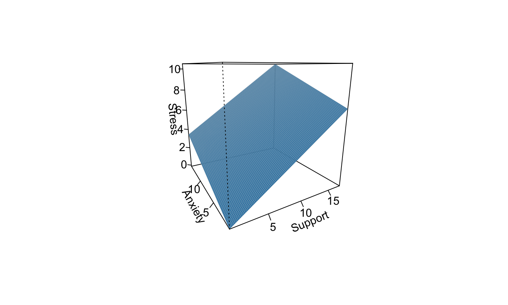

- does parent SES cause better grades?
- r(gpa, ses) = .33, b = .41
- potential confound of peer relationships
- r(ses, peer) = .29
- r(gpa, peer) = .37
casual relationships
Multiple ways variables can relate
- spurious relationship
- indirect (mediation)
- moderate (interaction)
- multiple “causes”
multiple regression model
\[ \hat{Y} = b_{0} + b_{1}X_{1} + b_{2}X_{2}+...+b_{p}X_{p} \]
Coefficient of Determination
\[R^2 = \frac{SS_{reggression}} {SS_{Y}} = \frac{s_{\hat{Y}}^2}{s_{Y}} \]
GPA = SES + Peer relationships
-Can be thought of as overlapping Venn diagrams

redundent vs non-redundent information

types of correlations
- pearson ignores all outside variables
types of correlations
- semi-partial
- the extent to which the part of X1 that is independent of x2 correlates with all of Y
semi-partial

semi-partial
\[ sr = r_{y(1.2)} = \frac{r_{Y1}-r_{Y2}r_{12} }{\sqrt{1-r_{12}^2}} \] \[ sr^2 = R_{Y.12}^2 - r_{Y2}^2 \]
types of correlations
- partial
- the extent to which the part of X1 that is independent of X2 is correlated with the part of Y that is also independent of X2
partial correlation

partial correlation
\[ pr = r_{y1.2} = \frac{r_{Y1}-r_{Y2}r_{12} }{\sqrt{1-r_{Y2}^2}\sqrt{1-r_{12}^2}} \]
\[ sr = r_{y(1.2)} = \frac{r_{Y1}-r_{Y2}r_{Y12} }{\sqrt{1-r_{12}^2}} \]
partial correlation
\[ pr^2 = \frac{R_{Y.12}^2 - r_{Y2}^2}{1-r_{Y2}^2} \]
\[ sr^2 = R_{Y.12}^2 - r_{Y2}^2 \]
multiple regression model
\[ \hat{Y} = b_{0} + b_{1}X_{1} + b_{2}X_{2}+...+b_{p}X_{p} \]
how to interpret multiple regression cofficients?
- residual in simple regression can be thought of as a measure of Y that is left over after accounting for your DV
- partial correlation can be created by:
- create measure of X1 independent of X2
- create measure of Y independent of X2
- correlate new measures
interpretting multiple regression model
\[ \hat{Y} = b_{0} + b_{1}X_{1} + b_{2}X_{2}+...+b_{p}X_{p} \]
- intercept is when all predictors = 0
- regression coefficients are “partial” regression coefficients
- predicted change in y for a 1 unit change in x, holding all other predictors constant
example
mr.model <- lm(Stress ~ Support + Anxiety, data = Multipleregression) summary(mr.model)
## ## Call: ## lm(formula = Stress ~ Support + Anxiety, data = Multipleregression) ## ## Residuals: ## Min 1Q Median 3Q Max ## -4.1958 -0.8994 -0.1370 0.9990 3.6995 ## ## Coefficients: ## Estimate Std. Error t value Pr(>|t|) ## (Intercept) -0.31587 0.85596 -0.369 0.712792 ## Support 0.40618 0.05115 7.941 1.49e-12 *** ## Anxiety 0.25609 0.06740 3.799 0.000234 *** ## --- ## Signif. codes: 0 '***' 0.001 '**' 0.01 '*' 0.05 '.' 0.1 ' ' 1 ## ## Residual standard error: 1.519 on 115 degrees of freedom ## Multiple R-squared: 0.3556, Adjusted R-squared: 0.3444 ## F-statistic: 31.73 on 2 and 115 DF, p-value: 1.062e-11
library(psych) describe(Multipleregression$Stress)
## vars n mean sd median trimmed mad min max range skew kurtosis ## X1 1 118 5.18 1.88 5.27 5.17 1.65 0.62 10.32 9.71 0.08 0.22 ## se ## X1 0.17
visualizing multiple regression
library(visreg) visreg2d(mr.model,"Support", "Anxiety", plot.type = "persp")

OLS
- similar to before \[ \hat{z}_{Y} = b_{1}^*Z_{X1} + b_{2}^*Z_{X2}\] \[ minimize \sum (z_{Y}-\hat{z}_{Y})^2\]
standardized partial regression coefficient
\[b_{1}^* = \frac{r_{Y1}-r_{Y2}r_{12}}{1-r_{12}^2}\]
\[b_{2}^* = \frac{r_{Y2}-r_{Y1}r_{12}}{1-r_{12}^2}\]
Notice similarity with semi-partial correlation
\[b_{1}^* = \frac{r_{Y1}-r_{Y2}r_{12}}{1-r_{12}^2}\]
\[ sr = r_{y(1.2)} = \frac{r_{Y1}-r_{Y2}r_{Y12} }{\sqrt{1-r_{12}^2}} \]
relationships among partial, semi- and b*
- three different ways to represent same effect
- all standardized
- if predictors are not correlated, sr and pr equal
Original metric
\[b_{1} = b_{1}^*\frac{s_{Y}}{s_{X1}} \]
\[b_{1}^* = b_{1}\frac{s_{X1}}{s_{Y}} \]
Intercept
\[b_{0} = \bar{Y} - b_{1}\bar{X_{1}} - b_{2}\bar{X_{2}} \]
How to visualize “controlling for”
- example of x and y controlling for W. Taken from @nickchk
- What is raw data?
How to visualize “controlling for”
2.what difference in X is explained by W. See the mean difference when W is dichotomous
How to visualize “controlling for”
- residualize X on W. Notice the means. Run the regresion
How to visualize “controlling for”
- What difference in Y is explained by W.
How to visualize “controlling for”
- residualize Y on W. Notice the means. Run the regresion
Fit revisited
mr.model$R2
## NULL
Multiple correlation R
\[ \hat{Y} = b_{0} + b_{1}X_{1} + b_{2}X_{2} \]
Multiple correlation R
- \(\hat{Y}\) is a linear combination of Xs
- \(r_{Y\hat{Y}}\) = multiple correlation = R
Multiple correlation R
\[ R = \sqrt{b_{1}^*r_{Y1} + b_{2}^*r_{Y2}} \] \[ R^2 = {b_{1}^*r_{Y1} + b_{2}^*r_{Y2}} \]


sum of squares decomposition
same as before
\[ \frac{SS_{regression}}{SS_{Y}} = R^2 \] \[ {SS_{regression}} = R^2({SS_{Y})} \]
\[ {SS_{residual}} = (1- R^2){SS_{Y}} \] ## Check your model
library(tidyverse)
fit <- lm(hp ~ ., mtcars)
au <- broom::augment(fit)
au.gg <- au %>%
gather(x, val, -contains(".")) %>%
ggplot(aes(val, .resid)) +
geom_point() +
facet_wrap(~x, scales = "free")
print(au.gg)

significance tests
- R2 (omnibus)
- Regression Coefficients
- Increments to R2
R-squared
- Same as before
- Adding predictors into your model will increase R2 – regardless of whether or not the predictor is correlated with Y.
- Adjusted/Shrunken R2 takes into account the number of predictors in your model
Adjusted R-squared
\[R_{A}^2 = 1 - (1 -R^2)\frac{n-1}{n-p-1} \]
Anova table
anova(mr.model)
## Analysis of Variance Table ## ## Response: Stress ## Df Sum Sq Mean Sq F value Pr(>F) ## Support 1 113.151 113.151 49.028 1.807e-10 *** ## Anxiety 1 33.314 33.314 14.435 0.0002336 *** ## Residuals 115 265.407 2.308 ## --- ## Signif. codes: 0 '***' 0.001 '**' 0.01 '*' 0.05 '.' 0.1 ' ' 1
summary(mr.model)
## ## Call: ## lm(formula = Stress ~ Support + Anxiety, data = Multipleregression) ## ## Residuals: ## Min 1Q Median 3Q Max ## -4.1958 -0.8994 -0.1370 0.9990 3.6995 ## ## Coefficients: ## Estimate Std. Error t value Pr(>|t|) ## (Intercept) -0.31587 0.85596 -0.369 0.712792 ## Support 0.40618 0.05115 7.941 1.49e-12 *** ## Anxiety 0.25609 0.06740 3.799 0.000234 *** ## --- ## Signif. codes: 0 '***' 0.001 '**' 0.01 '*' 0.05 '.' 0.1 ' ' 1 ## ## Residual standard error: 1.519 on 115 degrees of freedom ## Multiple R-squared: 0.3556, Adjusted R-squared: 0.3444 ## F-statistic: 31.73 on 2 and 115 DF, p-value: 1.062e-11
test of individual regression coefficients
\[ H_{0}: \beta_{X}= 0 \] \[ H_{1}: \beta_{X} \neq 0 \]
test of individual regression coefficients
\[ se_{b} = \frac{s_{Y}}{s_{X}}{\sqrt{\frac {1-r_{xy}^2}{n-2}}} \]
\[ se_{b} = \frac{s_{Y}}{s_{X}}{\sqrt{\frac {1-R_{Y\hat{Y}}^2}{n-p-1}}} \sqrt{\frac {1}{1-R_{i.jkl...p}^2}}\]
- As N increases…
- As variance explained increases…
Tolerance
\[ se_{b} = \frac{s_{Y}}{s_{X}}{\sqrt{\frac {1-R_{Y\hat{Y}}^2}{n-p-1}}} \sqrt{\frac {1}{1-R_{i.jkl...p}^2}}\]
- what cannot be explained in Xi by other predictors
- Large tolerance (little overlap) means standard error will be small.
- what does this mean for including a lot of variables in your model?
what to include
- match population model (theoretically)
- many variables will not bias parameter estimates but will increase degrees of freedom and standard errors, potentially
methods for entering variables
- simultaneous
- hierarchically
simultaneous
- how do you interpret the regression coefficient
- how do you interpret the fit of the model?
endogeniety discussion ADD!!
hierarchical / model comparison
- When you want to see if the fit of one model is better than another
- Aka incremental variance
hierarchical / model comparison
- Multiple models are calculated
- Each predictor (or set of predictors) is assessed in terms of what it adds (in terms of variance explained) at the time it is entered
- Order is dependent on a priori hypothesis

R-square change
- distributed as an F \[ F(p.new, N - 1 - p.all) = \frac {R_{m.2}^2- R_{m.1}^2} {1-R_{m.2}^2} (\frac {N-1-p.all}{p.new}) \]
- can also be written in terms of SSresiduals
Model comparisons
m.1 <- lm(Stress ~ Support, data = Multipleregression) m.2 <- lm(Stress ~ Support + Anxiety, data = Multipleregression) anova(m.1, m.2)
## Analysis of Variance Table ## ## Model 1: Stress ~ Support ## Model 2: Stress ~ Support + Anxiety ## Res.Df RSS Df Sum of Sq F Pr(>F) ## 1 116 298.72 ## 2 115 265.41 1 33.314 14.435 0.0002336 *** ## --- ## Signif. codes: 0 '***' 0.001 '**' 0.01 '*' 0.05 '.' 0.1 ' ' 1
model comparisons
anova(m.1)
## Analysis of Variance Table ## ## Response: Stress ## Df Sum Sq Mean Sq F value Pr(>F) ## Support 1 113.15 113.151 43.939 1.12e-09 *** ## Residuals 116 298.72 2.575 ## --- ## Signif. codes: 0 '***' 0.001 '**' 0.01 '*' 0.05 '.' 0.1 ' ' 1
model comparisons
anova(m.2)
## Analysis of Variance Table ## ## Response: Stress ## Df Sum Sq Mean Sq F value Pr(>F) ## Support 1 113.151 113.151 49.028 1.807e-10 *** ## Anxiety 1 33.314 33.314 14.435 0.0002336 *** ## Residuals 115 265.407 2.308 ## --- ## Signif. codes: 0 '***' 0.001 '**' 0.01 '*' 0.05 '.' 0.1 ' ' 1
model comparisons
## ## Call: ## lm(formula = Stress ~ Support + Anxiety, data = Multipleregression) ## ## Residuals: ## Min 1Q Median 3Q Max ## -4.1958 -0.8994 -0.1370 0.9990 3.6995 ## ## Coefficients: ## Estimate Std. Error t value Pr(>|t|) ## (Intercept) -0.31587 0.85596 -0.369 0.712792 ## Support 0.40618 0.05115 7.941 1.49e-12 *** ## Anxiety 0.25609 0.06740 3.799 0.000234 *** ## --- ## Signif. codes: 0 '***' 0.001 '**' 0.01 '*' 0.05 '.' 0.1 ' ' 1 ## ## Residual standard error: 1.519 on 115 degrees of freedom ## Multiple R-squared: 0.3556, Adjusted R-squared: 0.3444 ## F-statistic: 31.73 on 2 and 115 DF, p-value: 1.062e-11
model comparisons
## ## Call: ## lm(formula = Stress ~ Support, data = Multipleregression) ## ## Residuals: ## Min 1Q Median 3Q Max ## -3.8215 -1.2145 -0.1796 1.0806 3.4326 ## ## Coefficients: ## Estimate Std. Error t value Pr(>|t|) ## (Intercept) 2.56046 0.42189 6.069 1.66e-08 *** ## Support 0.30006 0.04527 6.629 1.12e-09 *** ## --- ## Signif. codes: 0 '***' 0.001 '**' 0.01 '*' 0.05 '.' 0.1 ' ' 1 ## ## Residual standard error: 1.605 on 116 degrees of freedom ## Multiple R-squared: 0.2747, Adjusted R-squared: 0.2685 ## F-statistic: 43.94 on 1 and 116 DF, p-value: 1.12e-09
model comparisons
m.0 <- lm(Stress ~ 1, data = Multipleregression) m.1 <- lm(Stress ~ Support, data = Multipleregression) anova(m.0, m.1)
## Analysis of Variance Table ## ## Model 1: Stress ~ 1 ## Model 2: Stress ~ Support ## Res.Df RSS Df Sum of Sq F Pr(>F) ## 1 117 411.87 ## 2 116 298.72 1 113.15 43.939 1.12e-09 *** ## --- ## Signif. codes: 0 '***' 0.001 '**' 0.01 '*' 0.05 '.' 0.1 ' ' 1
partitioning the variance
- It doesn’t make sense to ask how much variance a variable explains (unless you qualify the association)
\[R_{Y.1234...p}^2 = r_{Y1}^2 + r_{Y(2.1)}^2 + r_{Y(3.21)}^2 + r_{Y(4.321)}^2 + ... \]
- In other words: order matters!
Group level multiple regression
- i.e., ANOVA models
- Need to put numbers to our categories
- Dummy code is default
- Effect coding is an option
- Other types too (though most are unhelpful)
When working with factors
- know thy class
class(one.way$group)
## [1] "factor"
table(one.way$group)
## ## control tx1 tx2 ## 45 150 58
- Many base R functions automatically convert character vectors to factors
- This is okay if you are just tossing into a regression model but problematic for many uses
Group level multiple regression
model.1 <- lm(drugs ~ group, data = one.way ) summary(model.1)
## ## Call: ## lm(formula = drugs ~ group, data = one.way) ## ## Residuals: ## Min 1Q Median 3Q Max ## -0.5015 -0.1524 -0.0613 -0.0613 4.0619 ## ## Coefficients: ## Estimate Std. Error t value Pr(>|t|) ## (Intercept) 0.32159 0.08964 3.588 0.000402 *** ## grouptx1 -0.42402 0.10236 -4.142 4.73e-05 *** ## grouptx2 -0.33289 0.11991 -2.776 0.005923 ** ## --- ## Signif. codes: 0 '***' 0.001 '**' 0.01 '*' 0.05 '.' 0.1 ' ' 1 ## ## Residual standard error: 0.6013 on 247 degrees of freedom ## (3 observations deleted due to missingness) ## Multiple R-squared: 0.06498, Adjusted R-squared: 0.05741 ## F-statistic: 8.583 on 2 and 247 DF, p-value: 0.0002491
What happened?
For every nominal/categorical variable that has more than 2 levels R (default R) automatically creates L-1 dummy variables
Each of these dummy variables consists of 0 & 1s just like before, except 1 group (the reference group) only is coded as a zero
The interpretation of each coefficent is the difference between the group coded 1 and the reference group
group means
library(dplyr)
(one.way %>%
group_by(group) %>%
filter(!is.na(drugs)) %>%
summarise(mean(drugs)))
## # A tibble: 3 x 2 ## group `mean(drugs)` ## <fct> <dbl> ## 1 control 0.322 ## 2 tx1 -0.102 ## 3 tx2 -0.0113
See what R is doing with contrasts function
- a part of every factor
contrasts(one.way$group)
## tx1 tx2 ## control 0 0 ## tx1 1 0 ## tx2 0 1
# Can see the same with only 2 levels contrasts(Multipleregression$group)
## Tx ## Control 0 ## Tx 1
reordering
- no inherent order, so what does R spit out at you first?
- default is alphabetic, but what if you wanted it by another variable
levels(one.way$group)
## [1] "control" "tx1" "tx2"
one.way$group.2 <- relevel(one.way$group, "tx2") levels(one.way$group.2)
## [1] "tx2" "control" "tx1"
model.2 <- lm(drugs ~ group.2, data = one.way ) tidy(summary(model.2))
## # A tibble: 3 x 5 ## term estimate std.error statistic p.value ## <chr> <dbl> <dbl> <dbl> <dbl> ## 1 (Intercept) -0.0113 0.0796 -0.142 0.887 ## 2 group.2control 0.333 0.120 2.78 0.00592 ## 3 group.2tx1 -0.0911 0.0937 -0.972 0.332
contrasts(one.way$group.2)
## control tx1 ## tx2 0 0 ## control 1 0 ## tx1 0 1
contrasts
## dummy variables via: contr.treatment(4)
## 2 3 4 ## 1 0 0 0 ## 2 1 0 0 ## 3 0 1 0 ## 4 0 0 1
## effect coding via: contr.sum(4)
## [,1] [,2] [,3] ## 1 1 0 0 ## 2 0 1 0 ## 3 0 0 1 ## 4 -1 -1 -1
Asign contrast to factor variable
contr.sum(3)
## [,1] [,2] ## 1 1 0 ## 2 0 1 ## 3 -1 -1
contrasts(one.way$group) <- contr.sum(3) model.3 <- lm(drugs ~ group, data = one.way ) tidy(model.3)
## # A tibble: 3 x 5 ## term estimate std.error statistic p.value ## <chr> <dbl> <dbl> <dbl> <dbl> ## 1 (Intercept) 0.0693 0.0432 1.60 0.110 ## 2 group1 0.252 0.0674 3.74 0.000228 ## 3 group2 -0.172 0.0518 -3.31 0.00105
effects (sum) coding
- note: intercept is the means of means
library(psych) describe(one.way$drugs)
## vars n mean sd median trimmed mad min max range skew kurtosis ## X1 1 250 -0.01 0.62 -0.16 -0.15 0 -0.18 4.38 4.56 5.11 26.82 ## se ## X1 0.04
table(one.way$group)
## ## control tx1 tx2 ## 45 150 58
- you may want to do “weighted” effect coding
anova(model.3)
## Analysis of Variance Table ## ## Response: drugs ## Df Sum Sq Mean Sq F value Pr(>F) ## group 2 6.207 3.10337 8.5826 0.0002491 *** ## Residuals 247 89.312 0.36159 ## --- ## Signif. codes: 0 '***' 0.001 '**' 0.01 '*' 0.05 '.' 0.1 ' ' 1
- What does the ANOVA table look like for model.1 and model.2?
- note the df for SSregression/SSbetween
what happens if you want a different reference group?
- in addition to relevel (and fct_relevel in forcats) you can change the contrast matrix
contrasts(one.way$group) <- contr.treatment(3, base = 2) model.4 <- lm(drugs ~ group, data = one.way ) tidy(model.4)
## # A tibble: 3 x 5 ## term estimate std.error statistic p.value ## <chr> <dbl> <dbl> <dbl> <dbl> ## 1 (Intercept) -0.102 0.0494 -2.07 0.0393 ## 2 group1 0.424 0.102 4.14 0.0000473 ## 3 group3 0.0911 0.0937 0.972 0.332
contrasts(one.way$group) <- contr.treatment(3, base = 3) model.5 <- lm(drugs ~ group, data = one.way ) tidy(model.5)
## # A tibble: 3 x 5 ## term estimate std.error statistic p.value ## <chr> <dbl> <dbl> <dbl> <dbl> ## 1 (Intercept) -0.0113 0.0796 -0.142 0.887 ## 2 group1 0.333 0.120 2.78 0.00592 ## 3 group2 -0.0911 0.0937 -0.972 0.332
What happens if you have both nominal and continuous variables in the same model?
model.6 <- lm(drugs ~ group + alcohol, data = one.way ) tidy(model.6)
## # A tibble: 4 x 5 ## term estimate std.error statistic p.value ## <chr> <dbl> <dbl> <dbl> <dbl> ## 1 (Intercept) 0.00177 0.0762 0.0232 0.982 ## 2 group1 0.245 0.116 2.11 0.0356 ## 3 group2 -0.0892 0.0896 -0.995 0.321 ## 4 alcohol 0.206 0.0419 4.91 0.00000164
how should you code variables to begin with?
- Easy enough to work with factor variables that have their level as their name
- No need to manually change (or create) a number associated with a level and use as.numeric
- For simple dichotomous variables, sometimes people do code 0/1 rather than tx/control for example
- Information could be lost without a code book, so best to name the variable what is coded 1 (e.g., tx or female rather than group or gender)